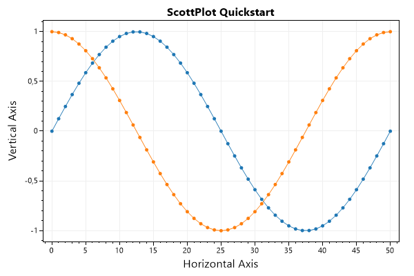
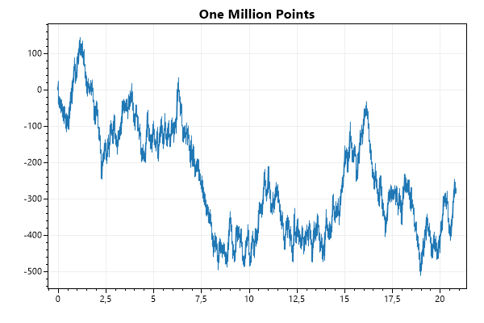
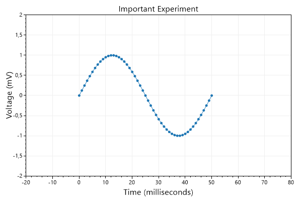
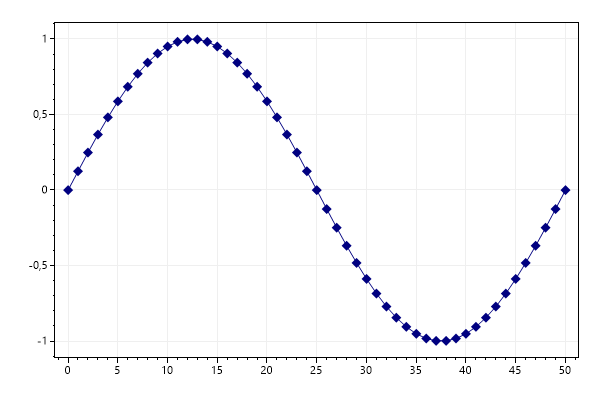
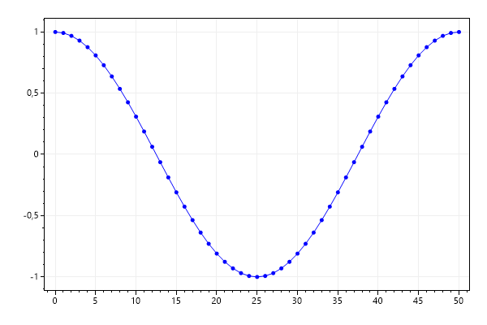
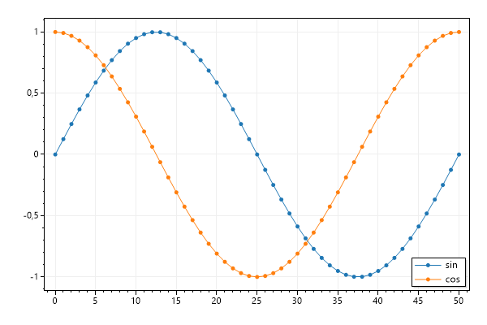

This page contains recipes for the Quickstart category.
Visit the Cookbook Home Page to view all cookbook recipes.
Visit the Cookbook Home Page to view all cookbook recipes.
Scatter Plot
Scatter plots have paired X/Y points.
var plt = new ScottPlot.Plot(600, 400);
// sample data
double[] xs = DataGen.Consecutive(51);
double[] sin = DataGen.Sin(51);
double[] cos = DataGen.Cos(51);
// plot the data
plt.AddScatter(xs, sin);
plt.AddScatter(xs, cos);
// customize the axis labels
plt.Title("ScottPlot Quickstart");
plt.XLabel("Horizontal Axis");
plt.YLabel("Vertical Axis");
plt.SaveFig("quickstart_scatter.png");

Signal Plot
Signal plots have evenly spaced Y points. Signal plots are very fast and can interactively display millions of data points. There are many different types of plottable objects, each serving a different purpose.
var plt = new ScottPlot.Plot(600, 400);
double[] values = DataGen.RandomWalk(1_000_000);
plt.AddSignal(values, sampleRate: 48_000);
plt.Title("One Million Points");
plt.SaveFig("quickstart_signal.png");

Axis Labels and Limits
Axis labels and limits can be customized
var plt = new ScottPlot.Plot(600, 400);
double[] time = DataGen.Consecutive(51);
double[] voltage = DataGen.Sin(51);
plt.AddScatter(time, voltage);
// Axes can be customized
plt.XAxis.Label("Time (milliseconds)");
plt.YAxis.Label("Voltage (mV)");
plt.XAxis2.Label("Important Experiment");
// Set axis limits to control the view
plt.SetAxisLimits(-20, 80, -2, 2);
plt.SaveFig("quickstart_axis.png");

Manually add a Plottable
You can create a plot manually, then add it to the plot with Add(). This allows you to create custom plot types and add them to the plot.
var plt = new ScottPlot.Plot(600, 400);
double[] xs = DataGen.Consecutive(51);
double[] sin = DataGen.Sin(51);
// instantiate a plottable
var splt = new ScottPlot.Plottable.ScatterPlot(xs, sin);
// customize its style or change its data as desired
splt.Color = Color.Navy;
splt.MarkerSize = 10;
splt.MarkerShape = MarkerShape.filledDiamond;
// add it to the plot
plt.Add(splt);
plt.SaveFig("quickstart_add.png");

Remove a Plottable
Call Remove() to remove a specific plottable.
var plt = new ScottPlot.Plot(600, 400);
double[] xs = DataGen.Consecutive(51);
double[] sin = DataGen.Sin(51);
double[] cos = DataGen.Cos(51);
var sinPlot = plt.AddScatter(xs, sin, color: Color.Red);
var cosPlot = plt.AddScatter(xs, cos, color: Color.Blue);
plt.Remove(sinPlot);
plt.SaveFig("quickstart_remove.png");

Clear Plottables
Call Clear() to remove all plottables from the plot. Overloads of Clear() allow you to remote one type of plottable, or a specific plottable.
var plt = new ScottPlot.Plot(600, 400);
double[] xs = DataGen.Consecutive(51);
double[] sin = DataGen.Sin(51);
double[] cos = DataGen.Cos(51);
plt.AddScatter(xs, sin, color: Color.Red);
plt.Clear();
plt.AddScatter(xs, cos, color: Color.Blue);
plt.SaveFig("quickstart_clear.png");
Legend
Most plottable objects have a Label which defines how they appear in the legend
var plt = new ScottPlot.Plot(600, 400);
double[] xs = DataGen.Consecutive(51);
double[] sin = DataGen.Sin(51);
double[] cos = DataGen.Cos(51);
plt.AddScatter(xs, sin, label: "sin");
plt.AddScatter(xs, cos, label: "cos");
plt.Legend();
plt.SaveFig("quickstart_legend.png");
